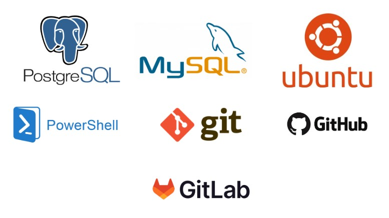

Skills
Menu
Sections
Top Skills
- Web Development
- Databases
- Security

Technologies I Use
- Database and Data Management
- Security and Systems
- DevOps and Cloud
Glossary
- MySQL
- Widely used open-source relational database for structured data.
PostgreSQL
Advanced open-source relational database with strong reliability and complex features.
Ubuntu
Popular Linux operating system, user-friendly and server-ready.
PowerShell
Command-line shell and scripting language for Windows automation.
Git
Distributed version control system for tracking code changes.
Github
Cloud-based platform for hosting Git repositories and collaboration.
GitLab
DevOps platform with Git repository hosting, CI/CD, and project management tools.